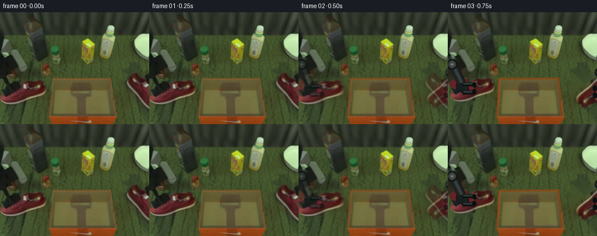
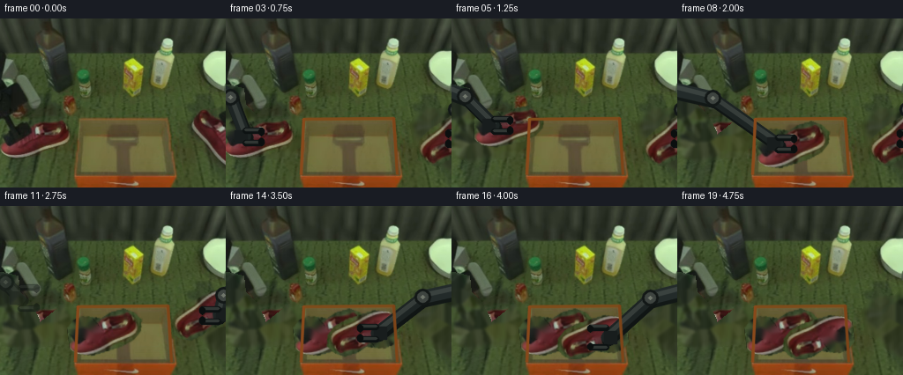
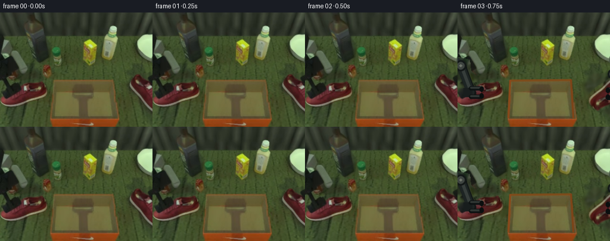
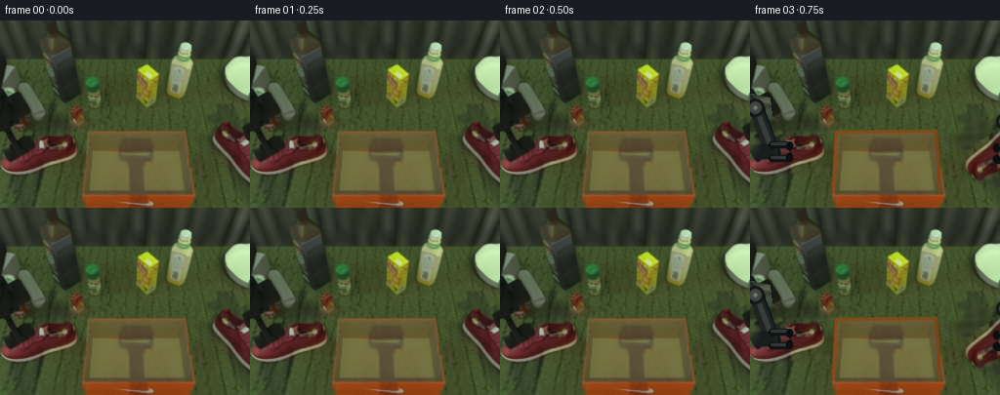
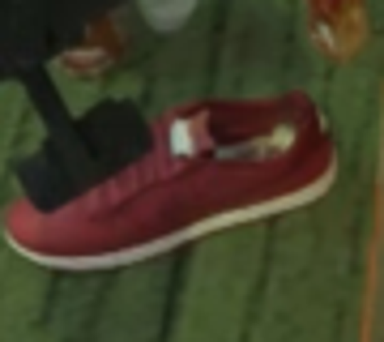
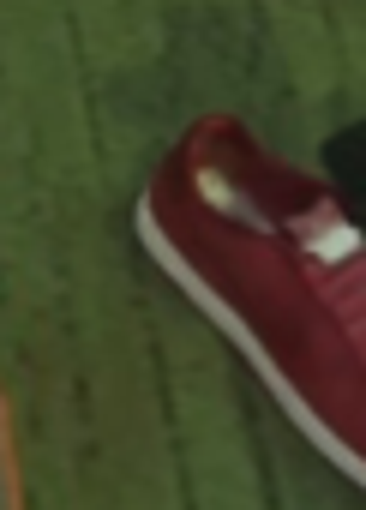
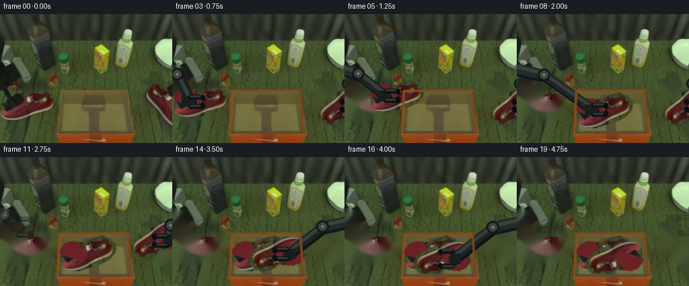
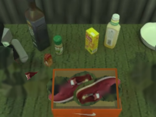
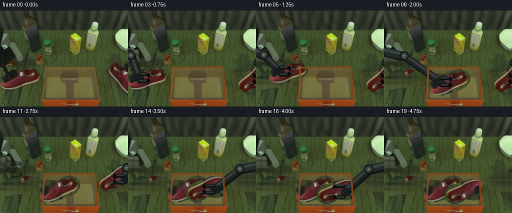

CODING AGENTS AS PIXEL WORLD MODELS
traex/GPT-5.6-Sol · common50_0048
点击播放 · 原生 RGB 像素
逐轮保存的候选
回放视频、检查图与代码变化。
每份候选均可单独播放。实际图片检查记录在下方工具轨迹中。
候选 01播放与检查图
点击播放 · 原生 RGB 像素


展开代码变化
--- 上一保存版本
+++ 本次保存版本
@@ -0,0 +1,188 @@
+from pathlib import Path
+import cv2
+import numpy as np
+from PIL import Image
+import artifact_io
+
+ROOT = Path(__file__).resolve().parent
+W,H = 256,192
+src = np.array(Image.open(ROOT/'first_frame.png').convert('RGB'))
+
+
+def smooth(x):
+ x=float(np.clip(x,0,1)); return x*x*(3-2*x)
+
+def bezier(p0,p1,p2,t):
+ t=smooth(t)
+ return ((1-t)**2*np.array(p0)+2*(1-t)*t*np.array(p1)+t*t*np.array(p2))
+
+# Recover the table behind the two shoes and the original dark end effectors.
+clean_mask=np.zeros((H,W),np.uint8)
+left_poly=np.array([(0,77),(18,81),(20,99),(31,110),(42,130),(35,143),(76,111),(84,121),(82,143),(69,153),(25,161),(4,155),(0,149)],np.int32)
+right_poly=np.array([(256,94),(247,105),(239,105),(229,101),(219,107),(211,121),(215,140),(229,151),(245,166),(256,170)],np.int32)
+cv2.fillPoly(clean_mask,[left_poly],255)
+cv2.fillPoly(clean_mask,[right_poly],255)
+clean_mask=cv2.dilate(clean_mask,np.ones((5,5),np.uint8),iterations=1)
+bgr=cv2.cvtColor(src,cv2.COLOR_RGB2BGR)
+clean=cv2.cvtColor(cv2.inpaint(bgr,clean_mask,5,cv2.INPAINT_TELEA),cv2.COLOR_BGR2RGB)
+# Keep the unmasked pixels absolutely unchanged.
+clean[clean_mask==0]=src[clean_mask==0]
+
+# The complete left shoe is the best available rigid texture for both matching shoes.
+x0,y0,x1,y1=0,107,86,163
+shoe_rgb=src[y0:y1,x0:x1].copy()
+sh,sw=shoe_rgb.shape[:2]
+shoe_a=np.zeros((sh,sw),np.uint8)
+outline=np.array([(0,18),(8,10),(18,7),(29,9),(39,12),(49,7),(66,4),(77,10),(84,18),(82,31),(73,40),(58,46),(25,52),(8,48),(0,41)],np.int32)
+cv2.fillPoly(shoe_a,[outline],255)
+shoe_a=cv2.GaussianBlur(shoe_a,(3,3),0.55)
+# Remove the original black gripper from the shoe texture while retaining laces/opening.
+occ=np.zeros((sh,sw),np.uint8)
+cv2.fillPoly(occ,[np.array([(0,0),(22,0),(40,28),(31,39),(15,31),(0,23)],np.int32)],255)
+occ=cv2.bitwise_and(occ,(shoe_a>80).astype(np.uint8)*255)
+# A restrained red reconstruction; texture is borrowed from nearby leather.
+leather=shoe_rgb.copy()
+for yy in range(sh):
+ for xx in range(sw):
+ if occ[yy,xx]:
+ # local leather-like color with illumination gradient
+ leather[yy,xx]=[104+int(12*xx/sw),31+int(8*yy/sh),37+int(6*yy/sh)]
+shoe_rgb=np.where(occ[...,None]>0,leather,shoe_rgb)
+shoe_rgba=np.dstack([shoe_rgb,shoe_a])
+
+
+def transformed_shoe(center, angle, scale=1.0):
+ """Return RGB and alpha canvases after one rigid affine transform."""
+ cx,cy=center
+ # Transform local pixels around the crop center directly into frame coordinates.
+ M=cv2.getRotationMatrix2D((sw/2,sh/2),angle,scale)
+ M[0,2]+=cx-sw/2; M[1,2]+=cy-sh/2
+ rgb=cv2.warpAffine(shoe_rgb,M,(W,H),flags=cv2.INTER_LINEAR,borderMode=cv2.BORDER_CONSTANT,borderValue=(0,0,0))
+ a=cv2.warpAffine(shoe_a,M,(W,H),flags=cv2.INTER_LINEAR,borderMode=cv2.BORDER_CONSTANT,borderValue=0)
+ return rgb,a
+
+def over(dst,rgb,a,opacity=1.0):
+ aa=(a.astype(np.float32)/255.0*opacity)[...,None]
+ return np.clip(dst.astype(np.float32)*(1-aa)+rgb.astype(np.float32)*aa,0,255).astype(np.uint8)
+
+def aa_line(img,p,q,color,width):
+ cv2.line(img,tuple(np.rint(p).astype(int)),tuple(np.rint(q).astype(int)),color,width,cv2.LINE_AA)
+
+def draw_arm(img, side, wrist, shoe_angle=0.0, grip=1.0, fade=1.0):
+ """Draw a rigid, two-link industrial end effector from a side of the workspace."""
+ if fade<=0: return img
+ layer=img.copy()
+ wrist=np.array(wrist,float)
+ if side=='left':
+ anchor=np.array([-8.,79.]); elbow=np.array([(wrist[0]-8)*.38, 88+0.12*(wrist[1]-125)])
+ direction=np.array([1.,0.])
+ else:
+ anchor=np.array([264.,94.]); elbow=np.array([256-(256-wrist[0])*.38, 102+0.10*(wrist[1]-130)])
+ direction=np.array([-1.,0.])
+ # soft contact shadow under the metal links
+ aa_line(layer,anchor+np.array([2,3]),elbow+np.array([2,3]),(18,24,22),16)
+ aa_line(layer,elbow+np.array([2,3]),wrist+np.array([2,3]),(16,21,20),13)
+ # matte charcoal links with cool edge highlight
+ aa_line(layer,anchor,elbow,(35,43,42),14)
+ aa_line(layer,anchor-np.array([0,2]),elbow-np.array([0,2]),(58,66,63),4)
+ aa_line(layer,elbow,wrist,(29,36,35),11)
+ aa_line(layer,elbow-np.array([0,2]),wrist-np.array([0,2]),(54,61,58),3)
+ cv2.circle(layer,tuple(np.rint(elbow).astype(int)),9,(19,24,23),-1,cv2.LINE_AA)
+ cv2.circle(layer,tuple(np.rint(elbow).astype(int)),6,(62,68,64),-1,cv2.LINE_AA)
+ cv2.circle(layer,tuple(np.rint(elbow).astype(int)),2,(112,118,107),-1,cv2.LINE_AA)
+ # wrist block
+ v=direction; n=np.array([0.,1.])
+ palm=wrist-v*5
+ box=np.array([palm-v*7-n*7,palm+v*7-n*7,palm+v*7+n*7,palm-v*7+n*7],np.int32)
+ cv2.fillConvexPoly(layer,box,(24,29,29),cv2.LINE_AA)
+ # two non-deforming fingers, opening slightly during release
+ sep=7+5*(1-grip)
+ tip_len=18
+ for s in (-1,1):
+ start=wrist+n*s*sep
+ end=start+v*tip_len
+ aa_line(layer,start,end,(13,18,18),6)
+ aa_line(layer,start-np.array([0,1]),end-np.array([0,1]),(48,54,51),2)
+ # small inward jaw pad
+ pad=end-n*s*3
+ aa_line(layer,end,pad,(11,15,15),5)
+ if fade<1:
+ return (img.astype(float)*(1-fade)+layer.astype(float)*fade).astype(np.uint8)
+ return layer
+
+# Save a source-shaped overlay for the orange front wall and its white swoosh.
+front_mask=np.zeros((H,W),np.uint8)
+cv2.fillPoly(front_mask,[np.array([(84,174),(194,174),(192,192),(86,192)],np.int32)],255)
+front_mask=cv2.GaussianBlur(front_mask,(3,3),.4)
+
+frames=[]
+for i in range(20):
+ if i==0:
+ frames.append(src.copy()); continue
+ # Frame 1 is a stable hold, ensuring a perfectly natural initial transition.
+ if i==1:
+ frames.append(src.copy()); continue
+ f=clean.copy()
+ # LEFT SHOE: picked up first, following a shallow lifted arc into the box.
+ if i<=8:
+ t=(i-2)/6
+ lc=bezier((40,135),(72,105),(132,143),t)
+ la=0+7*smooth(t)
+ ls=1.0-0.06*np.sin(np.pi*np.clip(t,0,1))
+ else:
+ lc=np.array((132.,143.)); la=7.; ls=1.0
+ lrgb,laa=transformed_shoe(lc,la,ls)
+ f=over(f,lrgb,laa)
+
+ # RIGHT SHOE: remains at its initial edge location, then follows after the first is settled.
+ if i<=8:
+ rc=np.array((253.,136.)); ra=202.; rs=1.0
+ elif i<=15:
+ t=(i-9)/6
+ rc=bezier((253,136),(213,101),(143,151),t)
+ ra=202-15*smooth(t)
+ rs=1.0-0.05*np.sin(np.pi*np.clip(t,0,1))
+ else:
+ rc=np.array((143.,151.)); ra=187.; rs=1.0
+ rrgb,raa=transformed_shoe(rc,ra,rs)
+ f=over(f,rrgb,raa)
+
+ # Grippers remain rigidly attached during transport, open, then retract.
+ if i<=8:
+ lw=lc+np.array((-18.,-1.)); lgrip=1.0; lfade=1.0
+ elif i==9:
+ lw=lc+np.array((-18.,-1.)); lgrip=.15; lfade=1.0
+ elif i<=12:
+ u=smooth((i-9)/3); lw=(lc+np.array((-18.,-1.)))*(1-u)+np.array((-4.,91.))*u
+ lgrip=0.; lfade=1.0-u*.7
+ else:
+ lw=np.array((-4.,91.)); lgrip=0.; lfade=max(0,1-(i-12))
+ f=draw_arm(f,'left',lw,la,lgrip,lfade)
+
+ if i<=8:
+ # right gripper waits on the second shoe
+ rw=rc+np.array((17.,0.)); rgrip=1.; rfade=1.
+ elif i<=15:
+ rw=rc+np.array((17.,0.)); rgrip=1.; rfade=1.
+ elif i==16:
+ rw=rc+np.array((17.,0.)); rgrip=.1; rfade=1.
+ else:
+ u=smooth((i-16)/3); rw=(rc+np.array((17.,0.)))*(1-u)+np.array((260.,101.))*u
+ rgrip=0.; rfade=1-u*.75
+ f=draw_arm(f,'right',rw,ra,rgrip,rfade)
+
+ # The near wall must occlude shoes/arms correctly; restores orange face and white Nike mark.
+ f=over(f,src,front_mask)
+ # restore crisp upper/side box lips, which sit above contents
+ cv2.line(f,(88,114),(190,113),(125,76,27),2,cv2.LINE_AA)
+ cv2.line(f,(88,114),(85,176),(137,73,27),2,cv2.LINE_AA)
+ cv2.line(f,(190,113),(194,176),(125,68,24),2,cv2.LINE_AA)
+
+ # Avoid a sudden synthetic jump at the first generated instant.
+ if i==2:
+ f=(src.astype(np.float32)*0.42+f.astype(np.float32)*0.58).astype(np.uint8)
+ frames.append(f)
+
+frames=np.stack(frames).astype(np.uint8)
+assert frames.shape==(20,192,256,3) and np.array_equal(frames[0],src)
+artifact_io.save(frames,ROOT)
候选 02播放与检查图
点击播放 · 原生 RGB 像素


展开代码变化
--- 上一保存版本
+++ 本次保存版本
@@ -2,6 +2,7 @@
import cv2
import numpy as np
from PIL import Image
+from scipy.ndimage import distance_transform_edt
import artifact_io
ROOT = Path(__file__).resolve().parent
@@ -23,10 +24,20 @@
cv2.fillPoly(clean_mask,[left_poly],255)
cv2.fillPoly(clean_mask,[right_poly],255)
clean_mask=cv2.dilate(clean_mask,np.ones((5,5),np.uint8),iterations=1)
-bgr=cv2.cvtColor(src,cv2.COLOR_RGB2BGR)
-clean=cv2.cvtColor(cv2.inpaint(bgr,clean_mask,5,cv2.INPAINT_TELEA),cv2.COLOR_BGR2RGB)
-# Keep the unmasked pixels absolutely unchanged.
-clean[clean_mask==0]=src[clean_mask==0]
+# Build the revealed surface only from nearby green carpet pixels. Generic
+# inpainting pulls red leather into large holes; this keeps the mat green.
+r,g,b=[src[...,k].astype(np.int16) for k in range(3)]
+carpet=(g>r+7)&(g>b+8)&(g>38)&(r<92)
+invalid=~carpet
+_,nearest=distance_transform_edt(invalid,return_indices=True)
+carpet_fill=src[nearest[0],nearest[1]].copy()
+carpet_fill=cv2.GaussianBlur(carpet_fill,(7,7),0)
+# Fine vertical threads make the fill read as the same woven mat.
+yy,xx=np.indices((H,W))
+threads=(3*np.sin(xx*.47)+2*np.sin(xx*.16+yy*.025)).astype(np.int16)
+carpet_fill=np.clip(carpet_fill.astype(np.int16)+threads[...,None],0,255).astype(np.uint8)
+clean=src.copy()
+clean[clean_mask>0]=carpet_fill[clean_mask>0]
# The complete left shoe is the best available rigid texture for both matching shoes.
x0,y0,x1,y1=0,107,86,163
@@ -40,14 +51,8 @@
occ=np.zeros((sh,sw),np.uint8)
cv2.fillPoly(occ,[np.array([(0,0),(22,0),(40,28),(31,39),(15,31),(0,23)],np.int32)],255)
occ=cv2.bitwise_and(occ,(shoe_a>80).astype(np.uint8)*255)
-# A restrained red reconstruction; texture is borrowed from nearby leather.
-leather=shoe_rgb.copy()
-for yy in range(sh):
- for xx in range(sw):
- if occ[yy,xx]:
- # local leather-like color with illumination gradient
- leather[yy,xx]=[104+int(12*xx/sw),31+int(8*yy/sh),37+int(6*yy/sh)]
-shoe_rgb=np.where(occ[...,None]>0,leather,shoe_rgb)
+# Reconstruct hidden leather from the shoe's own adjacent red texture.
+shoe_rgb=cv2.cvtColor(cv2.inpaint(cv2.cvtColor(shoe_rgb,cv2.COLOR_RGB2BGR),occ,4,cv2.INPAINT_TELEA),cv2.COLOR_BGR2RGB)
shoe_rgba=np.dstack([shoe_rgb,shoe_a])
@@ -125,12 +130,12 @@
f=clean.copy()
# LEFT SHOE: picked up first, following a shallow lifted arc into the box.
if i<=8:
- t=(i-2)/6
+ t=(i-3)/5
lc=bezier((40,135),(72,105),(132,143),t)
la=0+7*smooth(t)
ls=1.0-0.06*np.sin(np.pi*np.clip(t,0,1))
else:
- lc=np.array((132.,143.)); la=7.; ls=1.0
+ lc=np.array((120.,143.)); la=7.; ls=1.0
lrgb,laa=transformed_shoe(lc,la,ls)
f=over(f,lrgb,laa)
@@ -143,7 +148,7 @@
ra=202-15*smooth(t)
rs=1.0-0.05*np.sin(np.pi*np.clip(t,0,1))
else:
- rc=np.array((143.,151.)); ra=187.; rs=1.0
+ rc=np.array((158.,149.)); ra=187.; rs=.96
rrgb,raa=transformed_shoe(rc,ra,rs)
f=over(f,rrgb,raa)
@@ -168,7 +173,7 @@
rw=rc+np.array((17.,0.)); rgrip=.1; rfade=1.
else:
u=smooth((i-16)/3); rw=(rc+np.array((17.,0.)))*(1-u)+np.array((260.,101.))*u
- rgrip=0.; rfade=1-u*.75
+ rgrip=0.; rfade=1-u
f=draw_arm(f,'right',rw,ra,rgrip,rfade)
# The near wall must occlude shoes/arms correctly; restores orange face and white Nike mark.
@@ -178,9 +183,9 @@
cv2.line(f,(88,114),(85,176),(137,73,27),2,cv2.LINE_AA)
cv2.line(f,(190,113),(194,176),(125,68,24),2,cv2.LINE_AA)
- # Avoid a sudden synthetic jump at the first generated instant.
+ # Hold two frames before motion; avoid an interpolated/ghosted pickup.
if i==2:
- f=(src.astype(np.float32)*0.42+f.astype(np.float32)*0.58).astype(np.uint8)
+ f=src.copy()
frames.append(f)
frames=np.stack(frames).astype(np.uint8)
候选 03播放与检查图
点击播放 · 原生 RGB 像素


展开代码变化
--- 上一保存版本 +++ 本次保存版本 @@ -2,7 +2,6 @@ import cv2 import numpy as np from PIL import Image -from scipy.ndimage import distance_transform_edt import artifact_io ROOT = Path(__file__).resolve().parent @@ -28,10 +27,18 @@ # inpainting pulls red leather into large holes; this keeps the mat green. r,g,b=[src[...,k].astype(np.int16) for k in range(3)] carpet=(g>r+7)&(g>b+8)&(g>38)&(r<92) -invalid=~carpet -_,nearest=distance_transform_edt(invalid,return_indices=True) -carpet_fill=src[nearest[0],nearest[1]].copy() -carpet_fill=cv2.GaussianBlur(carpet_fill,(7,7),0) +# Interpolate the visible carpet horizontally across foreground objects. This +# preserves the illumination at every depth without borrowing object colors. +carpet_fill=np.empty_like(src) +xgrid=np.arange(W) +for y in range(H): + good=np.flatnonzero(carpet[y]) + if len(good)<2: + carpet_fill[y]=[48,66,42] + else: + for c in range(3): + carpet_fill[y,:,c]=np.interp(xgrid,good,src[y,good,c]) +carpet_fill=cv2.GaussianBlur(carpet_fill,(5,5),0) # Fine vertical threads make the fill read as the same woven mat. yy,xx=np.indices((H,W)) threads=(3*np.sin(xx*.47)+2*np.sin(xx*.16+yy*.025)).astype(np.int16)
可观测工具轨迹
实际执行的命令与返回图片。
命令 1exit 0
/bin/bash -lc "cat GENERATION_RULES.md && printf '\\n---PROMPT---\\n' && cat prompt.txt"
命令 2exit 0
/bin/bash -lc "find . -maxdepth 2 -type f -printf '%p %s bytes\\n' | sort"
命令 3exit 0
/bin/bash -lc "python - <<'PY'
from PIL import Image
im=Image.open('first_frame.png')
print(im.size, im.mode)
PY
ffmpeg -version | head -3"命令 4exit 0
/bin/bash -lc "cat task_spec.json && sed -n '1,240p' artifact_io.py"
命令 5exit 0
/bin/bash -lc "python - <<'PY'
from PIL import Image
im=Image.open('first_frame.png')
im.crop((0,95,90,175)).resize((540,480)).save('left_crop.png')
im.crop((195,85,256,170)).resize((366,510)).save('right_crop.png')
PY"命令 6exit 0
/bin/bash -lc "python - <<'PY'
try:
import cv2; print('cv2',cv2.__version__)
except Exception as e: print('no',e)
try:
import scipy; print('scipy',scipy.__version__)
except Exception as e: print('noscipy',e)
PY"命令 7exit 0
/bin/bash -lc "cat > generate.py <<'PY'
from pathlib import Path
import cv2
import numpy as np
from PIL import Image
import artifact_io
ROOT = Path(__file__).resolve().parent
W,H = 256,192
src = np.array(Image.open(ROOT/'first_frame.png').convert('RGB'))
def smooth(x):
x=float(np.clip(x,0,1)); return x*x*(3-2*x)
def bezier(p0,p1,p2,t):
t=smooth(t)
return ((1-t)**2*np.array(p0)+2*(1-t)*t*np.array(p1)+t*t*np.array(p2))
# Recover the table behind the two shoes and the original dark end effectors.
clean_mask=np.zeros((H,W),np.uint8)
left_poly=np.array([(0,77),(18,81),(20,99),(31,110),(42,130),(35,143),(76,111),(84,121),(82,143),(69,153),(25,161),(4,155),(0,149)],np.int32)
right_poly=np.array([(256,94),(247,105),(239,105),(229,101),(219,107),(211,121),(215,140),(229,151),(245,166),(256,170)],np.int32)
cv2.fillPoly(clean_mask,[left_poly],255)
cv2.fillPoly(clean_mask,[right_poly],255)
clean_mask=cv2.dilate(clean_mask,np.ones((5,5),np.uint8),iterations=1)
bgr=cv2.cvtColor(src,cv2.COLOR_RGB2BGR)
clean=cv2.cvtColor(cv2.inpaint(bgr,clean_mask,5,cv2.INPAINT_TELEA),cv2.COLOR_BGR2RGB)
# Keep the unmasked pixels absolutely unchanged.
clean[clean_mask==0]=src[clean_mask==0]
# The complete left shoe is the best available rigid texture for both matching shoes.
x0,y0,x1,y1=0,107,86,163
shoe_rgb=src[y0:y1,x0:x1].copy()
sh,sw=shoe_rgb.shape[:2]
shoe_a=np.zeros((sh,sw),np.uint8)
outline=np.array([(0,18),(8,10),(18,7),(29,9),(39,12),(49,7),(66,4),(77,10),(84,18),(82,31),(73,40),(58,46),(25,52),(8,48),(0,41)],np.int32)
cv2.fillPoly(shoe_a,[outline],255)
shoe_a=cv2.GaussianBlur(shoe_a,(3,3),0.55)
# Remove the original black gripper from the shoe texture while retaining laces/opening.
occ=np.zeros((sh,sw),np.uint8)
cv2.fillPoly(occ,[np.array([(0,0),(22,0),(40,28),(31,39),(15,31),(0,23)],np.int32)],255)
occ=cv2.bitwise_and(occ,(shoe_a>80).astype(np.uint8)*255)
# A restrained red reconstruction; texture is borrowed from nearby leather.
leather=shoe_rgb.copy()
for yy in range(sh):
for xx in range(sw):
if occ[yy,xx]:
# local leather-like color with illumination gradient
leather[yy,xx]=[104+int(12*xx/sw),31+int(8*yy/sh),37+int(6*yy/sh)]
shoe_rgb=np.where(occ[...,None]>0,leather,shoe_rgb)
shoe_rgba=np.dstack([shoe_rgb,shoe_a])
def transformed_shoe(center, angle, scale=1.0):
\"\"\"Return RGB and alpha canvases after one rigid affine transform.\"\"\"
cx,cy=center
# Transform local pixels around the crop center directly into frame coordinates.
M=cv2.getRotationMatrix2D((sw/2,sh/2),angle,scale)
M[0,2]+=cx-sw/2; M[1,2]+=cy-sh/2
rgb=cv2.warpAffine(shoe_rgb,M,(W,H),flags=cv2.INTER_LINEAR,borderMode=cv2.BORDER_CONSTANT,borderValue=(0,0,0))
a=cv2.warpAffine(shoe_a,M,(W,H),flags=cv2.INTER_LINEAR,borderMode=cv2.BORDER_CONSTANT,borderValue=0)
return rgb,a
def over(dst,rgb,a,opacity=1.0):
aa=(a.astype(np.float32)/255.0*opacity)[...,None]
return np.clip(dst.astype(np.float32)*(1-aa)+rgb.astype(np.float32)*aa,0,255).astype(np.uint8)
def aa_line(img,p,q,color,width):
cv2.line(img,tuple(np.rint(p).astype(int)),tuple(np.rint(q).astype(int)),color,width,cv2.LINE_AA)
def draw_arm(img, side, wrist, shoe_angle=0.0, grip=1.0, fade=1.0):
\"\"\"Draw a rigid, two-link industrial end effector from a side of the workspace.\"\"\"
if fade<=0: return img
layer=img.copy()
wrist=np.array(wrist,float)
if side=='left':
anchor=np.array([-8.,79.]); elbow=np.array([(wrist[0]-8)*.38, 88+0.12*(wrist[1]-125)])
direction=np.array([1.,0.])
else:
anchor=np.array([264.,94.]); elbow=np.array([256-(256-wrist[0])*.38, 102+0.10*(wrist[1]-130)])
direction=np.array([-1.,0.])
# soft contact shadow under the metal links
aa_line(layer,anchor+np.array([2,3]),elbow+np.array([2,3]),(18,24,22),16)
aa_line(layer,elbow+np.array([2,3]),wrist+np.array([2,3]),(16,21,20),13)
# matte charcoal links with cool edge highlight
aa_line(layer,anchor,elbow,(35,43,42),14)
aa_line(layer,anchor-np.array([0,2]),elbow-np.array([0,2]),(58,66,63),4)
aa_line(layer,elbow,wrist,(29,36,35),11)
aa_line(layer,elbow-np.array([0,2]),wrist-np.array([0,2]),(54,61,58),3)
cv2.circle(layer,tuple(np.rint(elbow).astype(int)),9,(19,24,23),-1,cv2.LINE_AA)
cv2.circle(layer,tuple(np.rint(elbow).astype(int)),6,(62,68,64),-1,cv2.LINE_AA)
cv2.circle(layer,tuple(np.rint(elbow).astype(int)),2,(112,118,107),-1,cv2.LINE_AA)
# wrist block
v=direction; n=np.array([0.,1.])
palm=wrist-v*5
box=np.array([palm-v*7-n*7,palm+v*7-n*7,palm+v*7+n*7,palm-v*7+n*7],np.int32)
cv2.fillConvexPoly(layer,box,(24,29,29),cv2.LINE_AA)
# two non-deforming fingers, opening slightly during release
sep=7+5*(1-grip)
tip_len=18
for s in (-1,1):
start=wrist+n*s*sep
end=start+v*tip_len
aa_line(layer,start,end,(13,18,18),6)
aa_line(layer,start-np.array([0,1]),end-np.array([0,1]),(48,54,51),2)
# small inward jaw pad
pad=end-n*s*3
aa_line(layer,end,pad,(11,15,15),5)
if fade<1:
return (img.astype(float)*(1-fade)+layer.astype(float)*fade).astype(np.uint8)
return layer
# Save a source-shaped overlay for the orange front wall and its white swoosh.
front_mask=np.zeros((H,W),np.uint8)
cv2.fillPoly(front_mask,[np.array([(84,174),(194,174),(192,192),(86,192)],np.int32)],255)
front_mask=cv2.GaussianBlur(front_mask,(3,3),.4)
frames=[]
for i in range(20):
if i==0:
frames.append(src.copy()); continue
# Frame 1 is a stable hold, ensuring a perfectly natural initial transition.
if i==1:
frames.append(src.copy()); continue
f=clean.copy()
# LEFT SHOE: picked up first, following a shallow lifted arc into the box.
if i<=8:
t=(i-2)/6
lc=bezier((40,135),(72,105),(132,143),t)
la=0+7*smooth(t)
ls=1.0-0.06*np.sin(np.pi*np.clip(t,0,1))
else:
lc=np.array((132.,143.)); la=7.; ls=1.0
lrgb,laa=transformed_shoe(lc,la,ls)
f=over(f,lrgb,laa)
# RIGHT SHOE: remains at its initial edge location, then follows after the first is settled.
if i<=8:
rc=np.array((253.,136.)); ra=202.; rs=1.0
elif i<=15:
t=(i-9)/6
rc=bezier((253,136),(213,101),(143,151),t)
ra=202-15*smooth(t)
rs=1.0-0.05*np.sin(np.pi*np.clip(t,0,1))
else:
rc=np.array((143.,151.)); ra=187.; rs=1.0
rrgb,raa=transformed_shoe(rc,ra,rs)
f=over(f,rrgb,raa)
# Grippers remain rigidly attached during transport, open, then retract.
if i<=8:
lw=lc+np.array((-18.,-1.)); lgrip=1.0; lfade=1.0
elif i==9:
lw=lc+np.array((-18.,-1.)); lgrip=.15; lfade=1.0
elif i<=12:
u=smooth((i-9)/3); lw=(lc+np.array((-18.,-1.)))*(1-u)+np.array((-4.,91.))*u
lgrip=0.; lfade=1.0-u*.7
else:
lw=np.array((-4.,91.)); lgrip=0.; lfade=max(0,1-(i-12))
f=draw_arm(f,'left',lw,la,lgrip,lfade)
if i<=8:
# right gripper waits on the second shoe
rw=rc+np.array((17.,0.)); rgrip=1.; rfade=1.
elif i<=15:
rw=rc+np.array((17.,0.)); rgrip=1.; rfade=1.
elif i==16:
rw=rc+np.array((17.,0.)); rgrip=.1; rfade=1.
else:
u=smooth((i-16)/3); rw=(rc+np.array((17.,0.)))*(1-u)+np.array((260.,101.))*u
rgrip=0.; rfade=1-u*.75
f=draw_arm(f,'right',rw,ra,rgrip,rfade)
# The near wall must occlude shoes/arms correctly; restores orange face and white Nike mark.
f=over(f,src,front_mask)
# restore crisp upper/side box lips, which sit above contents
cv2.line(f,(88,114),(190,113),(125,76,27),2,cv2.LINE_AA)
cv2.line(f,(88,114),(85,176),(137,73,27),2,cv2.LINE_AA)
cv2.line(f,(190,113),(194,176),(125,68,24),2,cv2.LINE_AA)
# Avoid a sudden synthetic jump at the first generated instant.
if i==2:
f=(src.astype(np.float32)*0.42+f.astype(np.float32)*0.58).astype(np.uint8)
frames.append(f)
frames=np.stack(frames).astype(np.uint8)
assert frames.shape==(20,192,256,3) and np.array_equal(frames[0],src)
artifact_io.save(frames,ROOT)
PY
python generate.py
python - <<'PY'
import numpy as np
from PIL import Image
z=np.load('pixels.npz')['pixels']; print(z.shape,z.dtype)
print('first exact',np.array_equal(np.array(Image.open('frames/00.png')),np.array(Image.open('first_frame.png'))))
PY"命令 8exit 0
/bin/bash -lc "python generate.py && python - <<'PY'
import numpy as np
from PIL import Image
z=np.load('pixels.npz')['pixels']
a=np.array(Image.open('frames/00.png')); b=np.array(Image.open('first_frame.png'))
print('shape',z.shape,'first_exact',np.array_equal(a,b),'frames',len(list(__import__('pathlib').Path('frames').glob('*.png'))))
PY"命令 9exit 0
/bin/bash -lc "python generate.py && python - <<'PY'
import numpy as np
from PIL import Image
assert np.array_equal(np.array(Image.open('first_frame.png')),np.array(Image.open('frames/00.png')))
assert np.load('pixels.npz')['pixels'].shape==(192,256,20)
print('validated')
PY"命令 10exit 0
/bin/bash -lc 'ls -lh pixels.npz index.html inspection.png generate.py; git status --short 2>/dev/null || true'
视觉工具实际返回图片 1

视觉工具实际返回图片 2

视觉工具实际返回图片 3

视觉工具实际返回图片 4

视觉工具实际返回图片 5

视觉工具实际返回图片 6

视觉工具实际返回图片 7

视觉工具实际返回图片 8

保存候选 3 份；完成命令 10 次；可验证图片返回 8 张。原始 API 响应与完整日志保留在本地。